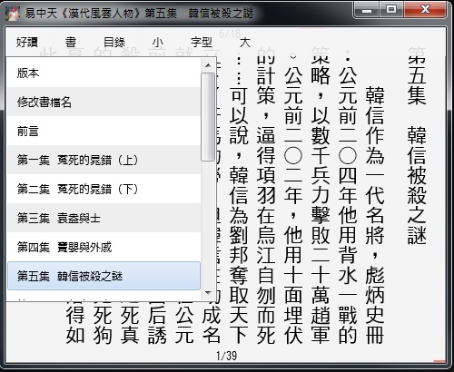

|
|
|
|
|
|
好讀Ａ計劃 Windows版 周劍輝
可使用本軟體在PC上，離線直式閱讀好讀的updb書檔。若未曾下載過書檔，請先在好讀，挑選幾本您想看的書，下載updb檔至您的PC上，通常是在Downloads資料夾內。
好讀 2.0 PC 版，Haodoo20.zip [下載] 2015/1/21 (2787K) 2015/5/5
1) 在PC或隨身碟上建一個資料夾（Haodoo或好讀）。
2) 將下載的 Haodoo20.zip 解壓縮至該資料夾。
3) 解出的檔案只有一個：Haodoo.exe。
4) 首次使用：點Haodoo.exe就可開啟，您可找已下載的updb檔閱讀。
5) 之後：點您的PC上任何一個updb檔，就能自動開啟閱讀。
建議使用方式
本軟體很容易上手操作。
首次使用，右上角只有兩個與書有關的按鈕：好讀與書。
好讀按鈕是方便您在好讀上找書下載，選項如左圖。譬如說按選項中的武俠小說，就可自動開啟您的預設瀏覽器，連上好讀的武俠小說網頁。
書按鈕是方便您在您的PC上找updb檔閱讀。首次使用只有一個選項就是找書。之後使用會列出您最近閱讀的一些書名，點選書名就可再開啟，並自動跳至上回的閱讀位置。
好讀的頁面沒有工具列，是採全頁面觸控或滑鼠點的方式操作。閱讀時要換章、換頁很簡單：
上一章，按左上角，上一章，按右下角；
下一頁，按左下角，上一頁，按右下角。
當然也可使用鍵盤和滑鼠的滾輪操作，方式同好讀的線上閱讀，請參看線上閱讀的說明。
閱讀的頁面大小，您可隨意調整。只要用滑鼠將視窗拉大或縮小就可。頁面的內容會自動重排。
閱讀的字體大小，您也可隨意調整。按頁面的中間，頁面的上緣會顯示操作按鈕：內容、小、字型、大。
按大，字體大一號；按小，字體小一號。可連續按至您滿意為止。
預設的字型是新細明體，可按字型修改。若用大字，可試華康中黑體。
內容按鈕顯示的是與正在閱讀中的書有關的幾個選項：
- 第一個選項是版本，顯示好讀書檔的製作日期，及版本類別。
-
第二個選項是修改書檔名，方便您修改updb的檔名。（為了避免檔名亂碼，由好讀下載的updb檔名，一律是英數字。若要方便日後判定書名，可點該updb檔，開啟之後，用此選項輕鬆修改檔名。）
- 其餘的選項是本書的目錄，可點選跳閱。

跋
好讀的第一個版本是2001年我為自己方便在Palm上撰寫的。後來雖陸續改寫成各機種，及至數年前的PC平台，各版本的操作方式完全一致。
這回A計劃的各平台版本設計是倒過來做的，先由PC Windows版開始重新考量，Mac OS X版和Windows版是同一設計，Android及iOS版則依各平台之特性另行再設計。
A計劃的版本對unicode有完整的支援，所以只提供updb檔的閱讀功能。閱讀頁面的章節讀取，及自動排版顯示等內部功能同舊版，未改。
最大的差異是操作介面。Windows版本不再提供書架功能，這一點我是想了很久。我想Windows及OS X都有大家很熟悉的檔案管理功能，使用者可自己建幾個資料夾，將updb檔依類別喜好放置其中，就是「書架」了。為了方便使用這樣的「書架」，另外提供兩個功能為輔：一是點updb檔就可開啟閱讀，二是可輕鬆修改updb的檔名。
因為各平台的程式撰寫，都有一些特性要配合克服，目前僅考慮must-have功能。待各平台版本都完成之後，再回頭考慮增加一些nice-to-have功能。
|
|
|
|
|
|
|
|
|
| 搜尋好讀 |
|
好讀第17年了。
有好讀真好，有你也真好。但不知遍及各地的你，究竟有多少。若你從未或很久沒贊助過好讀，請按這裡，贊助好讀美金或人民幣十元，讓我知道你存在。
11/25香港 Dennis C
幾年前由朋友介紹得悉好讀，多年來在旅途中它都帶給我很多樂趣。香港地方狹小，不少書都因地方問題而送人或丟棄，好讀卻帶給了我很多閲讀的方便、亦節省了儲存的位置。衷心多謝各位工作仝人！
11/19 美國紐約 June
發現好讀幾年了，但現在才發現這好讀留言板。抱歉呢，理應更早道謝。身在海外，要看一本中文書不是易事。書店售書種類少，價錢高；圖書館借書種類更少。幸好發現好讀網，可以一解書癮。衷心感謝所有有心人上載和校對。
11/17 大陸 Shirley
偶然發現好讀網這塊寶地真的很驚訝，網絡上有這樣安靜舒適的地方可以閱讀電子書，對我這種資金短缺的學生真的很意外很開心！
11/16 香港 chair chun wai
因為買了Kindle的緣故，所以才發現"好讀"這個地方。感謝"好讀"一直的更新和提供書本給大家。感謝感謝
11/15 香港 mike chan
我認識好讀是因爲kindle。那時中學買了kindle，需要找找電子書，因此在網上發現了好讀。對於繁體字kindle用家，這是個大福音！
11/13 大陸 BerthaR
今天因為Kindle的緣故找書，才發現好讀這個地方。感覺是一方淨土，公益地為書友們獲取知識省下了不少財力，節省了大家的時間：）目前我只是個高中生，提供的也只有十塊錢而已啦。十七年的好讀真是令人敬佩！希望你們知道我的感謝，還有知道更多人的感謝！
11/9 香港 MJ
從小喜愛看書，看書人也許都知道要管理保存書本是不容易的（尤其香港的地方空間更有限）。今年開始嘗試電子書，看看能否接受。因為好讀網的海量書本，小弟所喜愛的黃易＋衛斯理，還有準備開始看的金庸也不用愁了。感謝好讀！
>> 更多
|
|
|